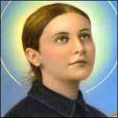
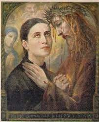
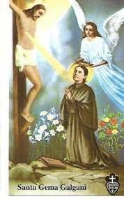
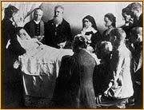
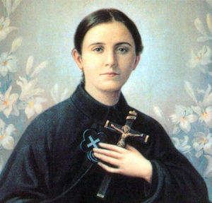

En la Italia medieval, vivía Santa Gema Galgani, una joven de asombrosa devoción y sufrimiento. Su vida estuvo marcada por una conexión intensa con Dios y un profundo amor por Cristo crucificado.
Desde temprana edad, Gema experimentó una pasión ardiente por Jesús y una profunda compasión por su sufrimiento en la cruz. Cada viernes, mientras meditaba en la Pasión de Cristo, le pedía a Dios que compartiera su dolor y sufrimiento. Un día, en medio de su oración, un rayo de luz atravesó su corazón y sintió una herida similar a la de la lanza en el costado de Cristo.
Pero el sufrimiento no terminó ahí. A medida que crecía, Gema fue golpeada por enfermedades debilitantes y dolores insoportables. Sin embargo, en lugar de ceder al desespero, ofreció cada sufrimiento a Dios como una ofrenda de amor por la redención de las almas.
En su lecho de enfermedad, experimentó éxtasis místicos y visiones de Jesús y la Virgen María. A menudo, en su éxtasis, le suplicaba a Jesús que perdonara los pecados de la humanidad y que llevara a las almas a la salvación. A través de su sufrimiento y sus plegarias, Gema se convirtió en un canal de gracia para aquellos que buscaban el perdón y la misericordia de Dios.
En su lecho de muerte, Gema exclamó: "¡Oh, ven, Jesús! ¡No tardes más!". Falleció a la edad de 25 años, habiendo entregado toda su vida al servicio de Dios y a la redención de las almas.
La historia de Santa Gema Galgani nos recuerda que el sufrimiento puede ser transformado en amor y ofrecido como una ofrenda por la salvación de otros. Su vida nos invita a abrazar nuestras propias cruces con valentía y a encontrar significado en el dolor a través de nuestra unión con Cristo. Su devoción y sacrificio nos desafían a amar a Dios y a los demás con un corazón generoso,recordándonos que incluso en medio del sufrimiento más profundo, el amor y la fe pueden brillar con una intensidad que toca las fibras más profundas de nuestra humanidad.
